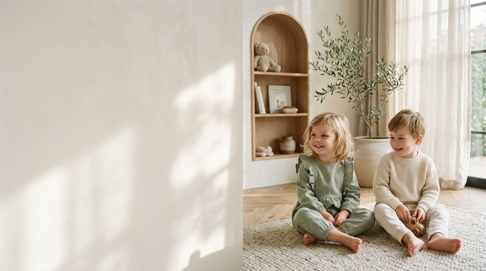

Pure Comfort for Little Miracles
Heirloom aesthetics woven from 100% certified organic cotton, botanical earth dyes, and cloud-soft bamboo fibers. Designed with tender care for the most sensitive infant skin.
100%
GOTS Certified
50,000+
Happy Mamas
Zero
Harsh Toxins
The Standard of Pure Gentle Care
Every stitch is guided by newborn dermatologist safety, sustainable farming, and generational longevity.
Soil-To-Skin Purity
Every strand of cotton is handpicked without synthetic defoliants or toxic chemical pesticides, protecting the earth and delicate newborn eczema-prone skin.
Flatlock Stitching Science
Traditional bulky seams cause friction against crawling knees. Our smooth flatlock seam architecture guarantees zero chafing, irritation, or redness.
Generational Longevity
Engineered with double-locked French hems and reinforced knees to outlast toddler sandbox adventures and become cherished family hand-me-downs.
Little Clothes. Lots of Love.
Thoughtfully designed wardrobe staples made from pure organic cotton and gentle weaves for your little one's everyday adventures.
Fabric Sensory Studio
Click to discover why our four proprietary weaves are loved by dermatologists and parents alike.

Experience The Atelier Sanctuary
Whether you are curating a thoughtful newborn registry or selecting a one-of-a-kind first birthday heirloom gown, our dedicated stylists are here to guide you with fabric swatches, custom gift notes, and precision fitting.
Heirloom Box Packaging
Plastic-free unboxing adorned with dried organic lavender sprigs and keepsake ribbon.
Custom Fit Consultation
Complimentary one-on-one virtual or boutique sizing advice with master tailors.
Bespoke Monogramming
Hand-finished custom embroidery for commemorative milestone gifts and initials.
Words From Real Mamas & Little Miracles
Real experiences from conscious parents who trust our hypoallergenic organic fabrics for their baby's tender skin.
"Finding clothes that look this elegant yet feel as gentle as a freshly washed cloud seemed impossible. Cuddle Cub is the only label our pediatrician immediately approved for Maya's eczema."


Ruffled Organic Romper
Breathable rib-knit with soft bow

Textured Linen Set
100% cloud-soft hypoallergenic linen